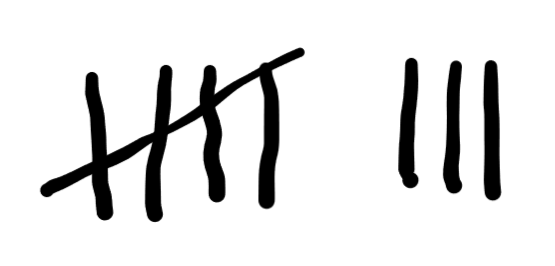
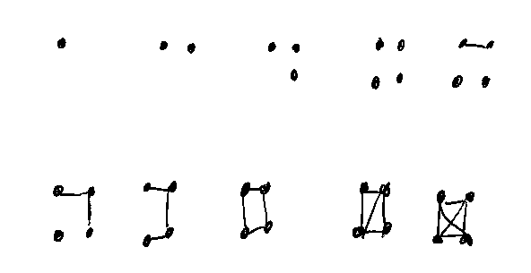
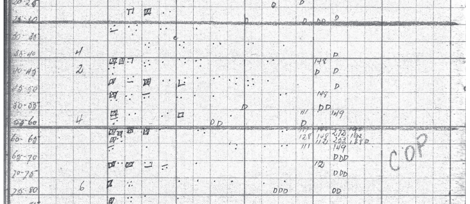
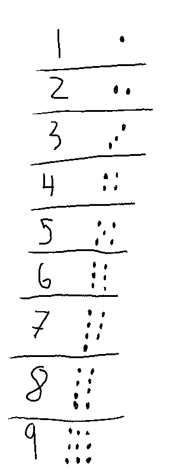
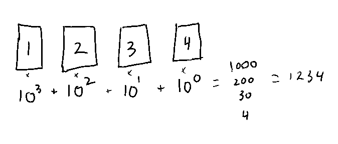
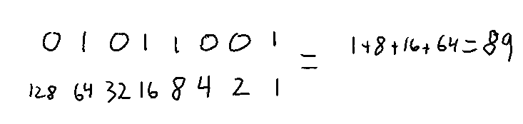
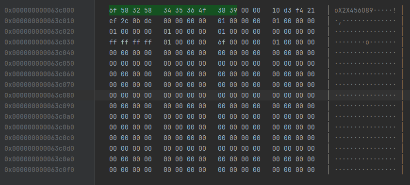

Binary, Hex, and Encoding Numbers
This page will explain how numbers are encoded in a few different formats. It's an investigation of numeral systems. Specifically, we will be focused on place-value notation. (These links are interesting, but like much of wikipedia, they are tend to only make sense if you already understand how all this works).
Why Encode Numbers anyway?
This is an unfair question, because we already are encoding numbers. You basically have to, in order to do anything with numbers. Look at me go: 42. You just parsed a number! You read that as decimal, interpreting the values to be... well, forty two.
What this question actually means is "Why learn a way to encode numbers beyond decimal?", which is a more fair question. The short answer is: They are used by the systems we are using! Being even just familiar enough to recognize them gives us a huge advantage in understanding all sorts of design decisions, errors, and more. "Computer Gibberish" becomes "those are numbers" (gibberish they still may be). Nobody is asking you to do long division in a new base system.
In other words, instead of writing or using these systems directly, this knowledge is more likely to be helpful as you will be slightly less confused - decisions will seem just that little bit less arbitraty - when interacting with basically anything that has to do with digital media or computers. Which is a lot of things.
The last reason is because I said so. You are probably here as one my students, and I have assigned you this as a reading; so that really should be a good enough reason.
Commonly Used Numeral Systems
Tally Marks
For every digit, make a mark. Easy!
We can do better: Using a slash across 4 lines to visually cluster a group of 5 marks together. The clustering makes it easy to add up the tally's by 5's instead of individually. Tally marks have the advantage of being great for counting, you don't have to remember the tally, you just keep adding marks. They are bad at representing "zero".
Dot-and-Line System
The numbers 1 through 10 in the dox-tally system.
The dot-and-line system is another tally system that leaves a cluster every 10 marks, instead of 5. It takes up less space on a page than traditional tally marks. I was taught it randomly one day, and have personally preferred it. The 3, 6, 7, and 9 are not horizontally symmetric, but can be written in either way without losing meaning (I use clockwise marks).
 This is a sample data page from forestry work in the 1940's, using this system. For more information on this tally notation, see here for a teachers guide on how it's used in forestry, and here for the paper where I found the scans of the data sheets. (pdf).Roman Numerals
| I |
V | X | L | C | D | M |
|---|---|---|---|---|---|---|
| 1 | 5 |
10 | 50 | 100 | 500 | 1000 |
Roman Numerals is a famous notation, and one you have likely experienced. It supports positive, whole numbers (and some fractions, apparently).
Here is one through 20 in roman numerals: I, II, III, IV, V, VI, VII, VIII, IX, X, XI, XII, XIII, XIV, XV, XVI, XVII, XVIII, XIX, XX
They are generally written by adding up the number values. To keep things compact, there is subtraction involved too, like "IV" for 4. Generally, as you read left-to-right, you add numbers that are larger or the same as the next value to their right, and subtract values that are smaller than the value to their right. You'll only ever subtract a single digit (8 is VIII, because IIX does not work). Most numbers are written as sums only, and large-to-small values. It's a bit more complicated than this, and there are a lot of variations.
18 is XVIII. Looking at the table above, X=10, V=5, and I = 1. 10+5+1+1+1 = 18.
One complication is that there are multiple notations that can readably get to the same value. IIII or IV for 4, for example. Hypothetically, you could just keep adding I's like a tally system, and it would still be readable.
62 can be written as LXII. 50+10+1+1. Each number gets smaller left to right, so we sum every time.
On the other hand, 42 would be "XLII". L is 50, X is 10. L is bigger than X, so XL is 50-10, so 40. II is 2. 50-10+2 = 42.
Super Bowl XLVII Roman Numerals by Austin Kirk via Wikimedia Commons. What number is this?You might have seen "MCM" a lot. "MCM" is 1000, CM is 900 (1000-100). So MCM is 1900 - and we are probably reading the start of a year.
MMXXIII is easy, as there is no subtraction: 2023. 2M's plus 2X's plus 3 I's = 2000+20+3.
You can't just mash these letters together in any order - it's often not parseable. "IXI", for example, is "10-1+1". Perhaps as a puzzle, one might parse this as '10', but it would be considered invalid.
You can convert in both directions, changing one will convert the other. The converter I am using here is fairly simple, and will break with very large numbers.
Positional Notation
Positional Notation is the underlying system powering binary, hexadecimal, decimal, and other useless or archaic notations.
This discussion will ignore fractions, decimals, and negative values. Sorry!
Decimal
You already know decimal notation. Breaking it down is useful because of this familiarity. You can then compare and find similar patterns when we break down binary and hexadeximal.
For decimal, let's invent a handful of symbols to represent some number of values. For example, I can represent values with the following nine symbols: 1 2 3 4 5 6 7 8 9. (You've probably seen these symbols before).
Then, I assign each one a numerical value to represent, signified here as a number of dots:
Uh oh. I'm forgot one. Well, zero. I forgot zero. Let's come up with a symbol to represent no thing... 0. Phew! Math is hard when you don't have zero's! Let's use the following 10 symbols: 0 1 2 3 4 5 6 7 8 9.
I can represent any value 0 through 9, now. Going larger would require more symbols. More symbols stinks, so let's do something else instead.
{kind=link}
Let's re-use our symbols. Instead of inventing some "ten" symbol, let's re-use the 1, but differentiate it somehow.
Because we have a zero, we can write our new value to the left of the first value. Now it's clearly different, and we didn't have to do something gross like draw a line over it (Looking at you, vinculum).
Let's have this place represent the number we couldn't before: an amount of 10's. In other words: The number times 10. As you know, this pattern continues. If we move it over another place, we multiply by 10 again, which would be the same as multiplying it by 100.
1234 becomes "4 plus 3 10's, plus 2 10s of 10s, plus one 10s of 10s of 10s. Or 1 times 1000 plus 2 times a hundred plus 3 times 10 plus 4. 1234.
Remembering our exponents, we can rewrite "10s of 10s of 10s" as "10 to the power of 3", and so on for every place. 10 to the power of 0 is 1.
This system is "Base 10", where 'base' means the number of unique symbols including zero.
Binary
Binary is a Base 2 system. We have 2 symbols (0 and 1). To count to 2, we have to move over a place. "10" is one 2s plus 0 ones. "100" is 1 2s of 2s (4). "1000" is 1 2s of 2s of 2s, or 8.
Each place is 2 to a power. The first 8 places are: 1, 2, 4, 8, 16, 32, 64, 128. They just double!
What patterns do you notice as you increment this counter?
Binary Properties
How Many Bits?
With positional notation, in the general case, we only add places as we need them. In other words, we exclude leading zeros.
In Binary, it's common to include leading zeros. This is because the number of places (or bits) tends to be important context, especially in hardware systems.
The counter above is 8-bits. With 8 bits, one can encode 28 (256) numbers. From 0 to 255.
Many computers store memory addresses with 64 bit numbers. There are 264 possible numbers, that's 18,446,744,070,000,001,024 possible values.
Doubling
The first is that if you "shift" all of the 1s and 0s to the left, (put a zero in the first place), you double the number.
So if you have 00001011, (11) and shift it to the left (inserting a zero), you get 00010110, which is 22. This is particularly neat, as it helps computers do more complicated math problems (like division!) really fast.
Shifting the other direction, of course, halves the number.
Even or Odd?
It's trivial to see if a number in Binary is even or odd. Just look at the first digit. If it's a 0, it's even. If it's a 1, it's odd.
Computers perform this check with a bitwise operation, out of the scope of this page.
Negative Numbers?
To represent negative numbers, we could use our left-most digit to no longer represent the value, but act as a negative sign. With a leading zero, an 8 bit value could go from -127 to 127 in range, instead of 0 to 255. -127 t0 127. Although, we did accidentally introduce the concept of "negative zero".
It turns out that having a negative zero is weird, but even worse is that we can't simply add numbers together anymore!
To solve these problems, we made things more complicated (hooray). One of the most common solutions to this problem is called Two's Complement, which you can learn about with this excellent Ben Eater video.
Hexadecimal
It's time for hexadecimal!
Hexadecimal is base 16, (decimal is base 10, and binary is base 2). It works just the same as the above, each place represents a value 16 times larger than the previous place.
Frustratingly, Hexadecimal is often abbreviated as "hex". We are referring to hexadecimal, not heximal. Nobody wants base 6. But 16? 16 is great. We love powers of two.
Let's use the following 16 symbols: 0 1 2 3 4 5 6 7 8 9 A B C D E F
Yep, we just borrowed from the alphabet. A is 10, B is 11, F is 15.
The frustration of Hex - it often looks like decimal numbers - also stems from its simplicity: we are using well known and well-supported characters.
Hexadeximal Properties
Density
One of the biggest strengths of hex is that, being a higher base, it takes up less space. 8 places (bits) of binary can be encoded neatly into only 2 places of hex.
In fact, one of the most common ways we use hexadecimal is to view 8-bit binary data.
00 is 00000000 and FF is 11111111. It's much easier to scan and parse a pile of hex than it is a pile of binary. ("Easier" here does not mean "Easy"). At the very least, it's more space-efficient on screen.
The memory view tool in JetBrains CLion debugging a c++ project. It displays 8-bit chunks of RAM as 2-letter hex codes, spaced in 32 bit groups of 4.
The light grey leftmost column is the Memory Address, a 64bit number. Hex is used because having 64 1's and 0's running across the screen would be completely unusable. For one, it would take up too much space!
Disambiguation
You may see "0x" prefix. This is a common nomenclature to say "what follows the 0x is a hexidecimal number". In fact, the long numbers on the left in the screenshot above are hex. 0b is used for binary. You might even see 0d for decimal. 42 is 0d42, 0x2a, and 9b00101010. This comes from the C programming language, but it's been adopted many other places as a convenient standard.
HTML Color Codes
HTML Color is defined as a string of six seemingly random color codes, usually preceded by a # sign.
They work in a pretty simple way. They are just 3 (8-bit) numbers, each encoded as a 2 digit hexadecimal numbers. They represent the red, green, and blue values of the color in that order (RRGGBB).
#000000 is black, because it's 0's across the board. #FFFFFF is the highest possible number, all 255's: white.